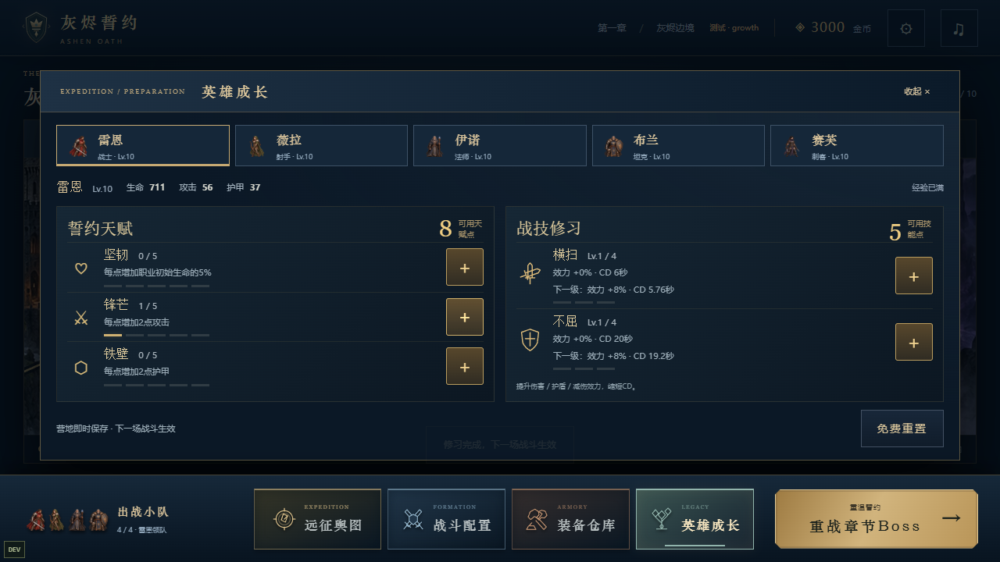
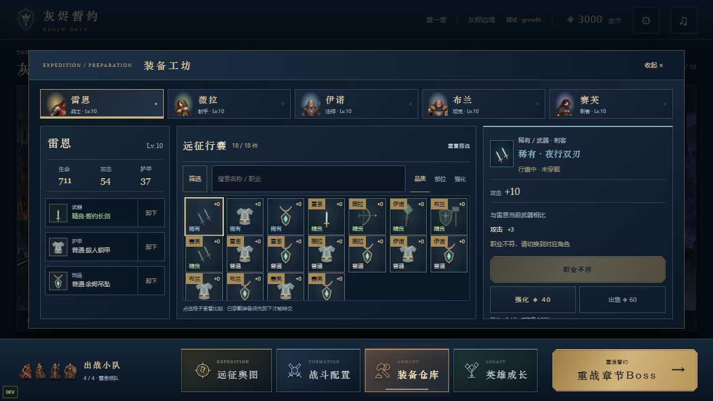
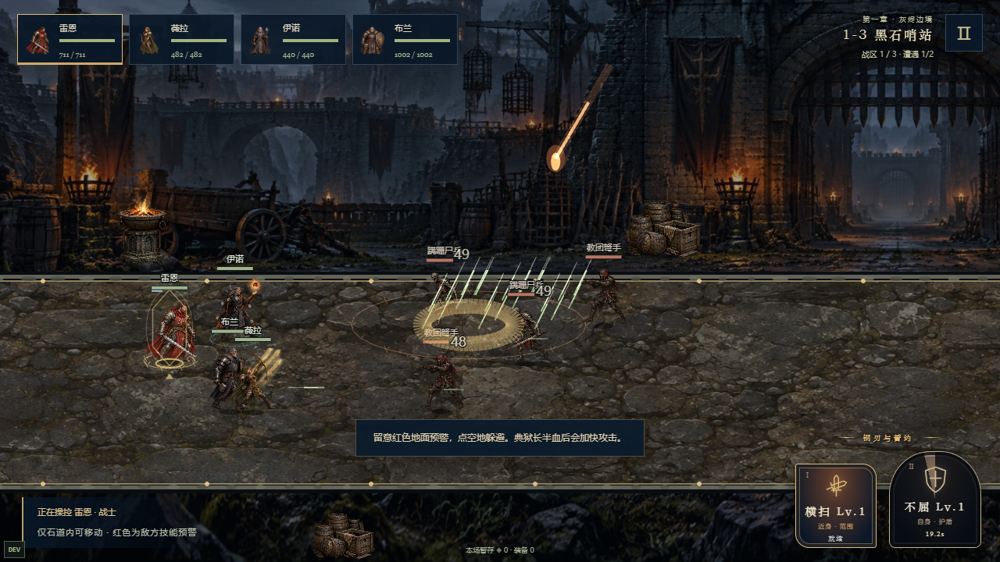
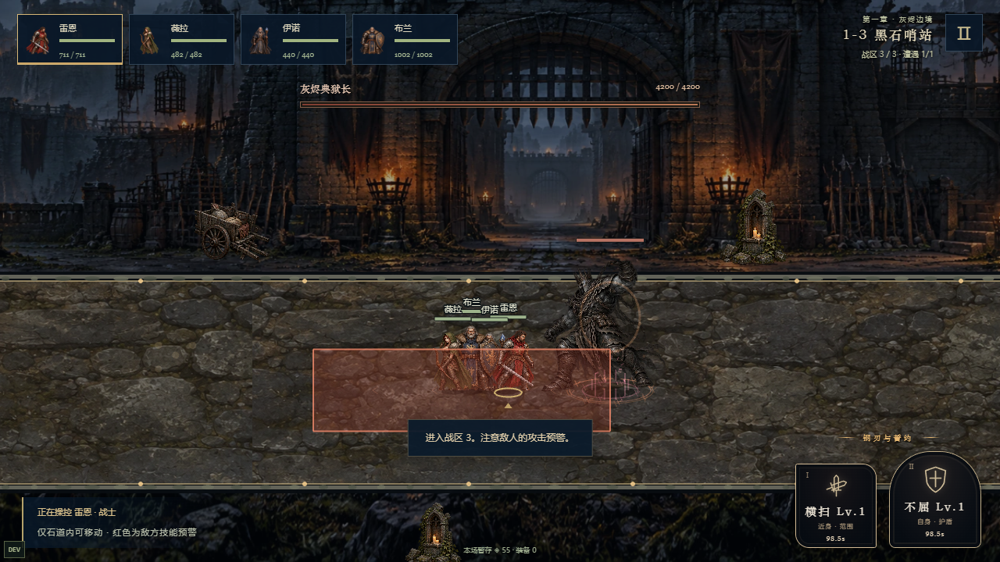
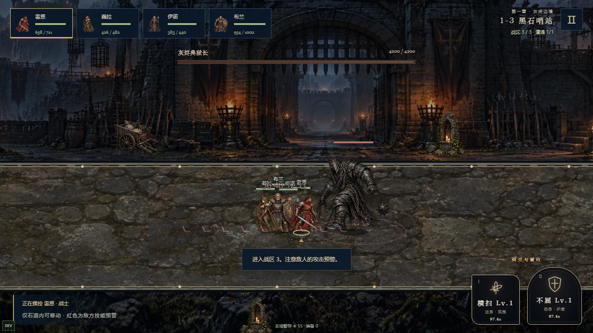

ASHEN OATH / AUDIO & COMBAT / v0.11.0
选择你的战场声景
先选择同一种声音，再横向试听三套版本。游戏内可在「声音设置」切换方案并保存，也可独立关闭发力声。默认沉稳写实。完整素材索引 · 上一版对照
沉稳写实
气息起音、干燥材质、克制的回响。粗砺战吼
较粗糙的声门、胸腔共鸣和颗粒冲击。秘仪回响
更轻的气息、柔和共鸣与较长空间尾。72个新音源均为原创DSP合成，新的发力声没有SAPI朗读层，仍不是真人配音。此处播放的是文件本身；游戏另外叠加主音量、普攻衰减、低音量持续层与并发限制。持续层在游戏内跟随护盾/减伤状态，破盾、到期、倒地、退出时结束，暂停时静音。文件检查不代表真人听感验收。
英雄成长 / 点数与操作集中

装备工坊 / 集中方格与搜索筛选

战斗 / 更小的小队与分层技能效果

Boss / 体型、法阵与预警冲击

